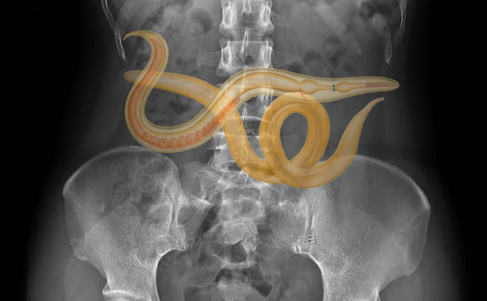
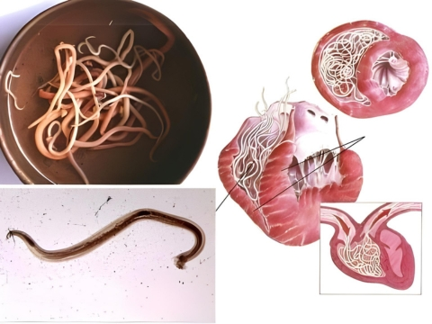

Dr. Gyula Prinz is a highly experienced doctor with a remarkable internal medicine and infectious diseases career. With 49 years of experience and 103 scientific publications, he has established himself as an expert in his field.
Dr. Prinz is the Chief Physician of the Department of Infectious Diseases at the renowned Szent Laszlo Hospital. He also works in the Department of Internal Medicine at the Duna Medical Center Budapest, focusing on pulmonology, nephrology, and rheumatology.
Gusta

18 889 tetszik
A PAPILLÓMÁKAT A SZERVEZETBEN LÉVŐ PARAZITÁK OKOZZÁK!
A statisztikák szerint világszerte több mint egymilliárd ember fertőzött parazitákkal. A fertőzés diagnosztizálásának legpontosabb módja a testen megjelenő papillómák kiütése.
Ha valakinek bőrpettyei vannak, az azt jelenti, hogy halálos paraziták hordozói és azok telepedtek meg a belső szerveiben, és lassan felfalják a húsát.

A tudósok felfedezték a papillómák megjelenésének valódi okát az emberi szervezetben: parazita fertőzések. A legújabb tanulmányok kimutatták, hogy a paraziták fő salakanyagai mérgezőek, és kedvező környezetet teremtenek a gyomorban a nyálkás baktériumok fejlődéséhez. Emiatt a parazitákkal fertőzött emberek testén papillómák figyelhetők meg...
Erről az orvosi jelenségről beszélgetünk Dr. Gyula Prinz-cel, aki kiemelkedő, felső szintű belgyógyász és infektológus, (49 éves tapasztalattal).
Szerkesztő: Gyula, jó napot kívánok! Kezdjük a legfontosabb kérdéssel: igaz-e, hogy Magyarország lakosságának többsége fertőzött parazitákkal?
Dr. Gyula Prinz: Igen, sajnos Magyarország az első helyen áll ebben a szomorú statisztikában Európában és általában a világon. Ennek oka a rossz ökológiai helyzet, a hatóságok tétlensége és maguknak az embereknek az egészségük iránti közömbössége.
Évente emberek milliói halnak meg paraziták által okozott betegségekben. Ha megnézzük a halotti bizonyítványokat, ott nem tüntetik fel a halál okát. A kivételek nagyon ritkák, és általában olyan helyzetekről van szó, amikor a fertőzést nem lehet figyelmen kívül hagyni (pl. amikor a szívet eltömítik a férgek). Az egészségügyi hatóságok számára hátrányt jelent, hogy elismerik a parazitafertőzés magas szintjét és azt a tényt, hogy a halálesetek kb. 89%-át paraziták okozzák. Ráadásul a paraziták okozta betegségek arra kényszerítik az embereket, hogy klinikákra járjanak és drága termékeket vásároljanak. Ez egy sajátos kereskedelmi iparág.
Szerkesztő: A papillómák valóban parazita fertőzések jelei?
Dr. Gyula Prinz: Igen, számos kutató egyetért abban, hogy a paraziták kiváló toxinjai a papillómák megjelenését okozzák az emberi bőrön. Továbbá, ha papillómákat lát a bőrén, az azt jelenti, hogy a paraziták már megtelepedtek a szervezetében, és aktívan petéznek. Végső soron ez azt jelenti, hogy akinek bőrkiütései vannak, az életveszélyben van.

Ismétlem, az összes halálesetnek, beleértve az úgynevezett "természetes haláleseteket" is, mintegy 89%-ának közös oka van: a paraziták lassan belülről felfalják az embert.
Szerkesztő: A paraziták általában helminták, amelyek bőrkinövéseket okozhatnak. Hogyan okozhatnak halált?
Dr. Gyula Prinz: Ez valójában nagy hiba. Rengeteg különböző típusú parazita él a különböző szervekben, ami sokféle következménnyel jár. Emellett a férgek, és még inkább a helminták meglehetősen veszélyesek. Szó szerint tönkreteszik a beleket, rothadást okoznak, majd teljesen leállítják a működést. Egyébként még a helmintákat is nehéz kimutatni és megszüntetni.
Ezenkívül több ezer parazita élhet a májban, az agyban, a tüdőben, a vérben vagy a gyomorban. És szinte mindegyikük halálos. Némelyikük azonnal agresszívan kezd el viselkedni, és elpusztítja a szervezetet. Más paraziták észrevétlenek maradnak, amíg számuk olyan nagy nem lesz, hogy a szervezet már nem tud ellenállni nekik, ami az ember halálához vezet. Számos halálos szövődményt okoznak: szívrohamot, rákos daganatokat, májzsugort, vesegyulladást, vesekárosodást és így tovább.
Ugyanakkor bátran állíthatom, hogy szinte mindenki fertőzött parazitákkal. Legtöbbjüket rendkívül nehéz kimutatni. És amikor a parazitás fertőzés következményei nyilvánvalóvá válnak, az orvosok megpróbálják megszüntetni őket. Még a boncolás során is speciális vizsgálatokra van szükség a paraziták kimutatásához (legalábbis a legtöbbjük esetében).
A papillómák az egyetlen univerzális jel, amely pontosan meghatározza az emberi szervezetben lévő parazitás fertőzést.
Szerkesztő: Tudna konkrét példákat említeni az orvosi beavatkozásokra?
Dr. Gyula Prinz: Több száz esetet tudnék elmesélni. De talán inkább azokra a példákra koncentrálnék, amelyek a paraziták veszélyességét szemléltetik.
1. A happy end végű helyzetek. Egy beteg visszatérő hasi fájdalomra panaszkodott. A vizsgálat kimutatta, hogy az egész bélrendszerét férgek tömítették el. Szó szerint labirintust ástak, inváziót indítottak, és az illető a szepszis szélén állt. A műtét során a bél egy részét eltávolították. A férgeket és a rothadó szöveteket eltávolították. Az intenzív osztályon töltött egy hét után a beteg jobban érezte magát.
2. Méh, benne egy parazita kolóniával. Sajnos az, hogy eltávolításuk , már nem volt lehetőség, mivel a paraziták és petéik teljesen kitöltötték a méhet, és sokszorosára növelték annak térfogatát. Ezért teljesen el kellett távolítani. Időközben a nőt megmentették, de a szervezet mérgezése túl erős volt, és 3 évvel a számos terápia után meghalt.
3. Echinococcus ciszták a szívben. A betegséget túl későn ismerték fel. A kezelőorvos azt hitte, hogy a férfinak egyszerűen koszorúér-betegsége és angina pectorisa van, de az igazság sokkal kegyetlenebbnek bizonyult. A műtét hasztalan volt, a konzervatív kezelés sem segített. A szívátültetés sem sikerült (nem volt donor). Ennek következtében a beteg kómában halt meg.
Szerkesztő: Hogyan lehet megtudni, hogy parazita fertőzésről van szó?
Dr. Gyula Prinz: Sajnos nincsenek megbízható módszerek a paraziták diagnosztizálására az emberi szervezetben. Ez részben azért van így, mert nagyon sokféle parazita létezik (több mint 2000 faj ismert). Ezeket néha nagyon nehéz tesztelni. A teljes parazita-ellenőrzést csak néhány helyen lehet elvégezni Magyarországon, és az sok pénzbe kerül.
Az első tünetek, amelyek a paraziták jelenlétét jelzik a szervezetben:
- papillómák
- rossz lehelet
- allergia (kiütés, vizenyős, folyós orr)
- bőrkiütés és
bőrpír
- gyakori megfázás, torokfájás, orrdugulás
- krónikus fáradtság (gyors otthoni fáradtság)
-
gyakori fejfájás
- székrekedés vagy hasmenés
- ízületi és izomfájdalom
- idegesség, álmatlanság
vagy étkezési zavarok
- sötét karikák a szem alatt.
Ha a tünetek közül legalább egy megfigyelhető, akkor 99%-os valószínűséggel élősködők vannak a szervezetében. A lehető leghamarabb meg kell szabadulnia tőlük!
Szerkesztő: Hogyan lehet megszabadulni a parazitáktól és megvédeni magunkat a jövőbeli fertőzésektől?
Dr. Gyula Prinz: Sok modern gyógyszer, amelyet parazitás fertőzések kezelésére használnak, problémás. Természetesen léteznek nagyon speciális készítmények, amelyek képesek megtisztítani a szervezetet a helmintáktól. Vannak olyan készítmények, amelyek többé-kevésbé hatásosak bizonyos szívférgek és májférgek ellen. A fő probléma azonban az, hogy ezek csak egy bizonyos típusú parazitát kezelnek. Minden ember legalább 7-8 fajjal fertőzött. Ha az átlagos számokat vesszük, akkor minden fertőzött emberre 11-14 féle parazita jut.
A mai napig csak egyetlen megbízható megoldás létezik a parazitáktól való megszabadulásra. A parazitaelleni termék neve - Detoxil water. Ez egy topinambour gumókivonat, gyömbér, articsóka levél kivonat, bojtorján gyökér és diókivonaton alapuló természetes növényi készítmény. Független kutatások meglepő eredményeket mutattak ki. A termék külföldi exportja azonban tilos, amíg Magyarország teljes lakosságát el nem látják vele.
Szerkesztő: Mitől olyan különleges a Detoxil water, és miben különbözik a többi féreghajtótól?
Dr. Gyula Prinz: Mint mondtam, ez az egyetlen olyan termék, amely az egész világon működik a paraziták ellen. Ezek a cseppek 100%-ban segítenek a szervezetünkben lévő mindenféle parazitát kiirtani. A Detoxil water cseppeket, éhgyomorra kell bevenni. Mérjen ki 20 cseppet és keverje el egy pohárban 200 ml vízzel. Reggeli előtt 30 perccel igya meg. A kezelés időtartama 21 nap. Megelőző intézkedésként évente kétszer ajánlott a termék használata, ezért is olyan népszerű ez a termék a nemzetközi gyógyszertárláncok és gyógyszergyárak körében. Más parazitaellenes termékekkel összehasonlítva a Detoxil water az emberi szervezetet megfertőző paraziták teljes spektrumát megtámadja. Figyelembe véve a diagnosztikai problémákat, ez lehetővé teszi az egész szervezet hatékony megtisztítását. Már említettem, hogy szinte lehetetlen meghatározni, hogy milyen típusú parazita támadta meg a szervezetet. A Detoxil water elpusztítja és kiirtja az összes parazitát, amely a testben bárhol, bármely szervben él, az agytól és a szívtől a májig és a belekig. Erre egyetlen más, jelenleg rendelkezésre álló eszköz sem képes.
Ez nem vegyi anyag, hanem egy teljesen természetes termék, amely nem okoz allergiás reakciókat, nem zavarja a bélflóra természetes egyensúlyát. Ezenkívül ennek a terméknek nincsenek mellékhatásai.

1. A Detoxil water
hatékonysága,
az általánosan elfogadott módszer szerint kiszámítva (a javulást elért ügyfelek számának aránya a terméket
szedő 100 fős csoport összes ügyfélszámához viszonyítva):
- a helminták és a tojások eltávolítása:
99%
- a májfunkció és a máj állapotának normalizálódása: 80%
- az allergiás bőrgyulladás
megszüntetése: 90%
- a gyomorhurut, a fekélyek és a hasmenés megszüntetése: 90%
- a vérszegénység
megszüntetése: 99%
- a papillómák és a szemölcsök megszüntetése: 99%
2. Az alábbiakban
felsoroltak közül a következőeket kell megemlíteni. Nem azonosítottak negatív mellékhatásokat vagy allergiás
reakciókat.
3. A Detoxil water az emberi szervezetben lévő paraziták elleni küzdelemben vezető
terméknek tekintik.
Szerkesztő: Olvasóink szeretnék tudni, hol lehet Detoxil water kedvezményesen vásárolni.
Dr. Gyula Prinz: A Detoxil water kedvezménye korlátozott ideig érvényes, és jelenleg csak bizonyos régiókban érvényes.
Töltsön ki egy rövid kérést a nevével és telefonszámával, hogy a szakértő felvehesse Önnel a kapcsolatot. Ha sikerül rendelést leadnia, akkor a termékből még van raktáron . Személyesen garantálom, hogy a weboldalon minden kérés esetén a termék a megadott kedvezménnyel kerül kiszállításra.
Szerkesztő: Gyula, van még valami, amit szeretnél mondani az olvasóinknak, mielőtt befejezzük az interjút?
Dr. Gyula Prinz: Mindannyiunknak gondoskodnunk kell az egészségünkről. Gyakran nem is tudunk róla, de 97-98%-os valószínűséggel élnek bennünk paraziták. Bárhol lehetnek: a vérben, a belekben, a tüdőben, a szívben vagy akár az agyban. A paraziták szó szerint belülről esznek meg, miközben mérgezik a szervezetünket. Az eredmény számos egészségügyi probléma, amelyek 15-25 évvel megrövidíthetik a várható élettartamot. A hirtelen halál problémájáról nem is akarok beszélni, amely általában az emberi szervezetben lévő parazitáknak való kitettséggel függ össze. Ne várjon, amíg túl késő lesz - cselekedjen most!
Frissítés : A készlet korlátozott. Az ajánlat a oldalon ér véget.
Dr. Gyula Prinz kérésére a Detoxil Water megrendelőlapot biztosítjuk Önnek:
Próbáljon szerencsét! Pörgesse meg a szerencsekereket! Akár 50% kedvezményt is nyerhet
Mindössze annyit kell tennie, hogy megadja nevét és telefonszámát.
Siessen! A
hátralévő idő

Gratulálunk!
Ezt a terméket a következő módon szerezheti be
50%
kedvezménnyel!
SOK SIKERT!
A PROMÓCIÓS CSOMAGOK HAMAROSAN VÉGET ÉRNEK
UPDATE: már csak 10 darab
maradt raktáron
Töltse ki az űrlapot, és szakemberünk hamarosan felveszi Önnel a kapcsolatot. A futár házhoz szállítja a megrendelést, a fizetés átvételkor történik.
Üdvözlettel, dr. Gyula Prinz
A rendelést gyorsan kiszállították.
Tisztelettel, dr. Gyula Prinz.
Üdvözlettel, dr. Gyula Prinz
Üdvözlettel, dr. Gyula Prinz
Tisztelettel, dr. Gyula Prinz
Tisztelettel, dr. Gyula Prinz